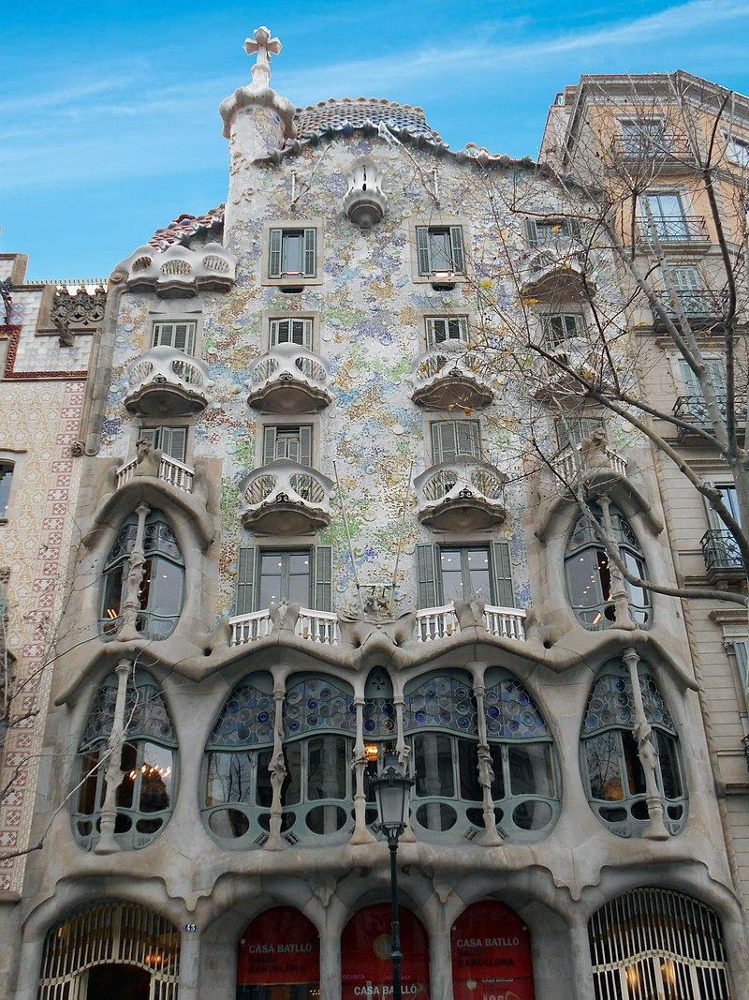
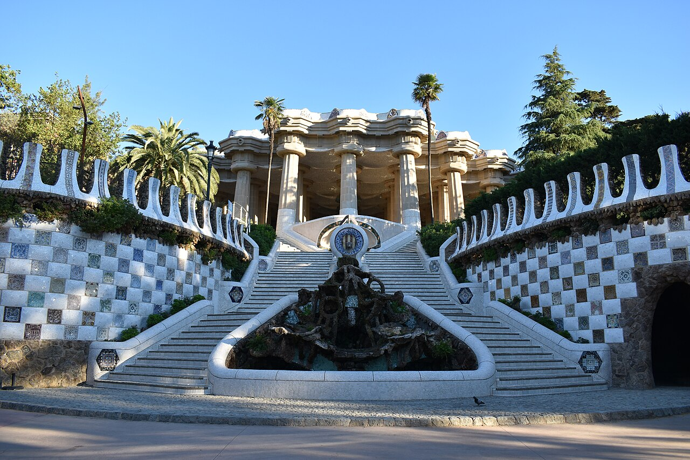

"La nueva situación general creada por la revolución industrial y social generó multiplicidad de nuevos temas edilicios. En el siglo XIX,
la iglesia y el palacio perdieron su importancia como temas principales y fueron reemplazados, a su turno, por el monumento, el museo, la vivienda,
el teatro, el palacio de exposiciones,
y el edificio para oficinas. Cada uno de estos temas, así como su sucesión temporal, indican el surgimiento de una nueva forma de vida,
basada en los nuevos significados existenciales.
Estas nuevas edificaciones representaba los valores económicos de la nueva sociedad capitalista,
así como sus fuerzas productivas se manifestaban de forma clara en edificios destinados a fábricas, oficinas y viviendas.
A partir de estos avances la reivindicación de la eficiencia y rentabilidad económica como prioridad insoslayable,
se observa una disminución de los patios en la arquitectura para optimizar lo económico."
"Para referirse a la arquitectura que emerge desde finales del siglo XIX se emplea el calificativo de “Moderna”. En este caso, hace referencia a la levantada desde el Art Nouveau y las propuestas hasta la década de los años 60 del siglo XX. La arquitectura del Movimiento Moderno hace una apuesta decidida a favor de determinadas corrientes y tendencias en gran medida relacionadas con las vanguardias artísticas. Por tanto, parece que han desaparecido los factores que diferenciaban la producción industrial y la artesanal quedando como valor fundamental de esta última el valor "artístico puro" que solo los entendidos pueden apreciar."